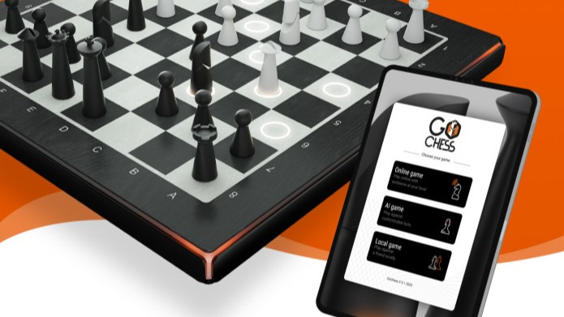

GoChess si integra con le piattaforme Lichess e Chess.com. Grazie ai sensori magnetici integrati e alla connettività per tracciare le mosse, è possibile giocare su GoChess, proprio come se si fosse seduti di fronte al proprio avversario. GoChess vi permette di creare e mantenere connessioni con altri appassionati di scacchi in qualsiasi parte del mondo, giocando comodamente da casa vostra.
Creata da maestri di scacchi, l'app dedicata GoChess si sincronizza perfettamente con la vostra scacchiera reale, fondendo le esperienze di gioco online e offline. Connettetevi alle piattaforme di scacchi più diffuse, risolvete i puzzle più impegnativi, rivisitate le partite storiche o trasmettete in streaming le partite in tempo reale sulla vostra scacchiera.
